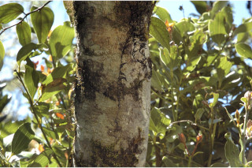
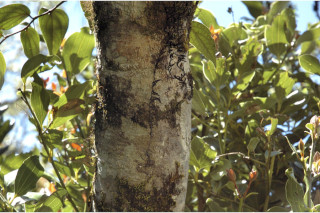
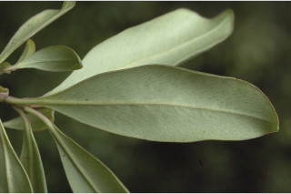
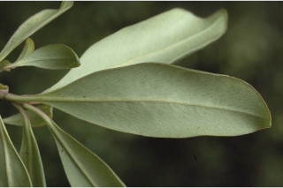

Small trees up to 10 m tall.
10 ಮೀ. ಎತ್ತರದವರೆಗಿನ ಸಣ್ಣ ಮರಗಳು.
Small trees up to 10 m tall.
சிறியமரங்கள் 10 மீ. உயரம் வரை வளரக்கூடியது.
Bark greyish, lenticellate; blaze red.
ತೊಗಟೆ ಬೂದು ಬಣ್ಣದಲ್ಲಿದ್ದು ಸೂಕ್ಷ್ಮ ವಾಯು ವಿನಿಮಯ ಬೆಂಡು ರಂಧ್ರಗಳ ಸಮೇತವಿರುತ್ತದೆ;ಕಚ್ಚು ಮಾಡಿದ ಜಾಗ ಕೆಂಪು ಬಣ್ಣದಲ್ಲಿರುತ್ತದೆ.
Bark greyish, lenticellate; blaze red.
மரத்தின் பட்டை சாம்பல் நிறமானது, பட்டைத்துளைகள் (லெண்டிசெல்லேட்) உடையது; உள்பட்டை சிவப்பு நிறமானது.
Young branchlets terete, glabrous with scars of fallen leaves.
ಎಳೆಯ ಕಿರುಕೊಂಬೆಗಳು ದುಂಡಾಗಿದ್ದು ರೋಮರಹಿತವಾಗಿದ್ದು ಎಲೆಯುದುರಿದ ಗುರುತುಗಳನ್ನು ಹೊಂದಿರುತ್ತವೆ.
Young branchlets terete, glabrous with scars of fallen leaves.
சிறியநுனிக்கிளைகள் குறுக்குவெட்டுத் தோற்றத்தில் வளையமானது, உரோமங்களற்றது இலைகள் உதிர்ந்ததால் உண்டாகும் தழும்புகளை ஏற்படுத்துகின்றன.
Leaves simple, alternate, spiral, subverticillate; petiole 0.5-1 cm long, planoconvex in cross section, glabrous; lamina 4-8 x 1-2.3 cm, elliptic-oblanceolate, apex obtuse, base attenuate, margin entire, transparent gland dotted and in lines, glabrous, coriaceous; midrib flat above; secondary_nerves and tertiary_nerves obscure.
ಎಲೆಗಳು ಸರಳವಾಗಿದ್ದು ಪರ್ಯಾಯ, ಸುತ್ತು ಮತ್ತು ಉಪ-ಆವರ್ತನಾ ಜೋಡಣೆ ವ್ಯವಸ್ಥೆಯಲ್ಲಿರುತ್ತವೆ; ತೊಟ್ಟುಗಳು 0.5 – 1 ಸೆಂ.ಮೀ. ಉದ್ದವಿದ್ದು ಅಡ್ಡ ಸೀಳಿದಾಗ ಸಪಾಟ ಪೀನ ಮಧ್ಯದ ಆಕಾರದಲ್ಲಿರುತ್ತವೆ ಮತ್ತು ರೋಮರಹಿತವಾಗಿರುತ್ತವೆ;ಪತ್ರಗಳು 4 - 8 X1 – 2.3 ಸೆಂ.ಮೀ.ವರೆಗಿನ ಗಾತ್ರವಿದ್ದು ಅಂಡವೃತ್ತ- ಅಂಡ-ಭರ್ಜಿಯ ಆಕಾರ ಹೊಂದಿದ್ದು, ಚೂಪಲ್ಲದ ತುದಿ, ಒಳಬಾಗಿದ ಬುಡ,ನಯವಾದ ಅಂಚು ಹೊಂದಿರುತ್ತವೆ,ಪತ್ರಗಳು ರೋಮರಹಿತವಾಗಿದ್ದು ಚುಕ್ಕೆ ರೂಪದ ರಸಗ್ರಂಥಿ ಮತ್ತು ರೇಖೆಗಳನ್ನೊಳಗೊಂಡಿರುತ್ತವೆ ಮತ್ತು ತೊಗಲನ್ನೋಲುವ ಮೇಲ್ಮೈ ಹೊಂದಿರುತ್ತವೆ;ಮಧ್ಯ ನಾಳ ಚಪ್ಪಟೆಯಾಗಿರುತ್ತದೆ; ಎರಡನೇ ಮತ್ತು ಮೂರನೇ ದರ್ಜೆಯ ನಾಳಗಳು ಅಸ್ಪಷ್ಟವಾಗಿರುತ್ತವೆ.
Leaves simple, alternate, spiral, subverticillate; petiole 0.5-1 cm long, planoconvex in cross section, glabrous; lamina 4-8 x 1-2.3 cm, elliptic-oblanceolate, apex obtuse, base attenuate, margin entire, transparent gland dotted and in lines, glabrous, coriaceous; midrib flat above; secondary_nerves and tertiary_nerves obscure.
இலைகள் தனித்தவை, மாற்றுஅடுக்கமானவை, சுழல் போல் அமைந்தது, சப்வர்டிசில்லேட்; இலைக்காம்பு 0.5-1 செ.மீ. நீளமானது, இலைக்காம்பு குறுக்குவெட்டுத் தோற்றத்தில் பிளேனோகான்வக்ஸ், உரோமங்களற்றது; இலை அலகு 4-8 x 1-2.3 செ.மீ., நீள்வட்ட-தலைகீழ் ஈட்டி வடிவானது, அலகின் நுனி மெட்டையானது, அலகின் தளம் அட்டனுவேட், அலகின் விளிம்பு முழுமையானது, ஒளிபுகும் சுரப்பி புள்ளி மற்றும் கோடுகளுடையது, உரோமங்களற்றது, கோரியேசியஸ்; மையநரம்பு மேற்பரப்பில் அலகின் பரப்பிற்கு சமமானது; இரண்டாம் நிலை நரம்புகள் மற்றும் மூன்றாம் நிலை நரம்புகள் கண்களுக்கு புலப்படாது.
Inflorescence sessile or shortly pedicelled umbels; flowers polygamous.
ಪುಷ್ಪ ಮಂಜರಿಗಳು ಸಣ್ಣ ವೃಂತ ಸಮೇತ ಅಥವಾ ವೃಂತರಹಿತವಾಗಿದ್ದು ಪೀಠಛತ್ರ ಮಾದರಿಯವುಗಳಾಗಿರುತ್ತವೆ;ಹೂಗಳು ಸಂಕೀರ್ಣ ಲಿಂಗಿಗಳು.
Inflorescence sessile or shortly pedicelled umbels; flowers polygamous.
மஞ்சரி காம்பற்றது அல்லது சிறிய மஞ்சரிகாம்புடைய அம்பல் வகை மஞ்சரி; மலர்கள் பாலிகோமஸ்.
Berry globose with persistent style; seed one.
ಬೆರ್ರಿ ಫಲಗಳು ಗೋಳಾಕಾರದಲ್ಲಿದ್ದು ಶಾಶ್ವತವಾಗಿ ಉಳಿಯುವ ಶಲಾಖೆಯನ್ನು ಹೊಂದಿರುತ್ತವೆ; ಬೀಜ ಒಂದು.
Berry globose with persistent style; seed one.
முழுச்சதைகனி (பெர்ரி), கோளவடிவானது, சூலகத்தண்டு நிரந்தரமானது; ஒரு விதையுள்ள கனி.
 



 
